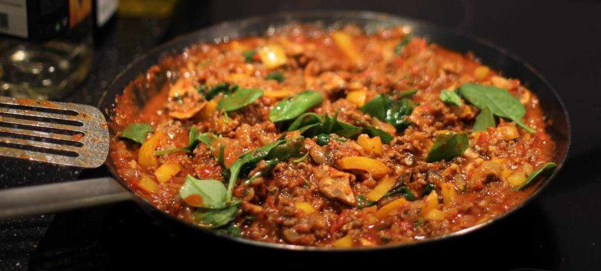

Red Pasta Sauce
Student's Milanese
metadata
Created on 2018-11-19 Last updated on 2018-11-28
Source: Simon's dad
Estimated time needed: At least 30 minutes. At most 39 minutes.
Ingredients
| 400 | g | minced meat | ||
| 400 | g | chopped tomatoes | ||
| 200 | g | onion | about 1 large one | |
| 140 | g | tomato paste | about 2 to 4 table spoons, to taste | |
| 100 | g | spinach leaves | ||
| 14 | g | garlic | 1 clove of garlic is about 7 g. | |
| 2 | tsp | black pepper | optional | |
| 2 | tbsp | olive oil | ||
| 1 | tbsp | salt | to taste | |
| 1 | tbsp | basil | ||
| 1 | tbsp | oregano | ||
| 1 | piece | chili pepper | optional | |
| 1 | piece | paprika | bell pepper | |
| 1 | handful | mushrooms | optional |
Scaling
Timeline
Directions
⌛ Active time 5 minutes
- 1 handful mushrooms | optional
- 1 piece paprika | bell pepper
Cut paprika and mushrooms:
Chop and set aside the paprika and the mushrooms. Do these first, because they survive laying around the longes amount of time (should you get distracted).
⌛ Active time 4 minutes
- 14 g garlic | 1 clove of garlic is about 7 g.
- 1 piece chili pepper | optional
Chop garlic and chili:
Finely chop the garlic (peel it first?) and chili. You can put them aside in the frying pan and let them wait there.
⌛ Active time 1 minutes
- 100 g spinach leaves
Wash the spinach
⌛ Active time 3 minutes
- 200 g onion | about 1 large one
Chop the onion:
Peel and chop the onion. I like using fairly large chunks so that it stands out as sweeter chunks in the result, but if you'd like it to almost dissappear and only add a tone of savory then chop it as finely as possible.
⌛ Active time 2 minutes
- 2 tbsp olive oil
Fry the garlic and chili:
Start up the frying process with the garlic and the chili so that they begin giving off some of their awesome fragrance. Be careful though, garlic easily burns, and the taste of burnt garlic penetrates everything and is really hard to get rid of, so it's better to err on the side of caution and fry it too little rather than too much. Also note that I like using really good nonstick pans and not adding excess fat, so even though I don't, you might want to add perhaps a tablespoon or so of butter or olive oil for this step.
⌛ Active time 7 minutes
- 400 g minced meat
Add minced meat and onion:
Fry until meat is brown. If you've started higher I'd turn it down to medium heat at this point.
⌛ Active time 4 minutes
Add mushrooms and paprika
⌛ Active time 2 minutes
- 400 g chopped tomatoes
- 140 g tomato paste | about 2 to 4 table spoons, to taste
Add the chopped tomatoes and paste:
Stir it in
⌛ Active time 1 minutes
- 1 tbsp basil
- 1 tbsp oregano
- 2 tsp black pepper | optional
- 1 tbsp salt | to taste
Season
⌛ Passive time 5 minutes
Let it simmer:
Let the tastes soak in. Remember to occationally stir so that it doesn't burn at the bottom.
⌛ Active time 5 minutes
Stir in the spinach:
Adding a fistful at a time, watch how spinach like other leafy things simply seems to dissolve and don't fill up space at when it's added to a warm mass.